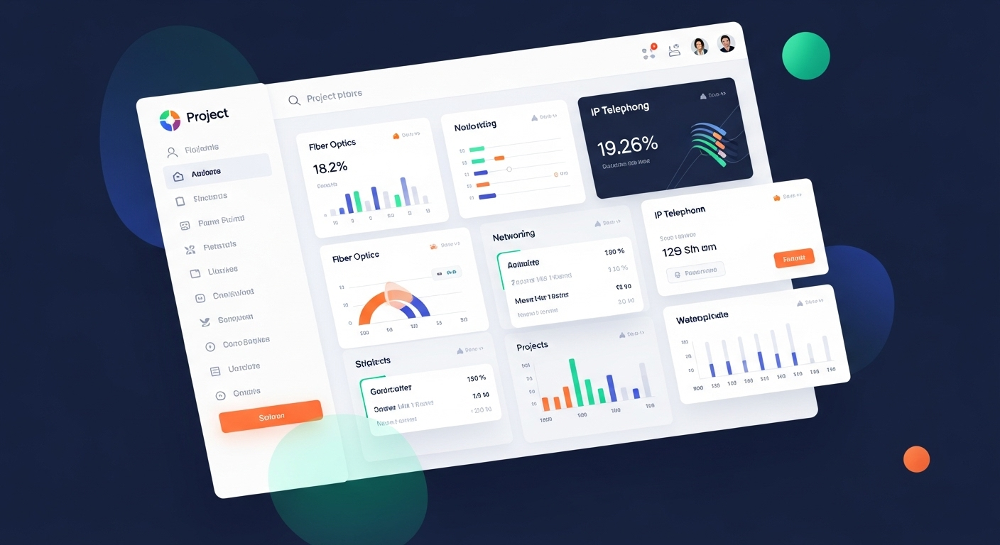

اپلیکیشن مدیریت پروژه شبکه
Flutter • Django • CRM
اپلیکیشن مدیریت پروژههای شبکه و مخابرات
مقاله پروژه: اپلیکیشن جامع مدیریت پروژههای شبکه
۱. کشف مشکل: پیچیدگی مدیریت پروژههای چندمرحلهای
پروژههای شبکه و مخابرات، به ویژه نصب فیبر نوری و تلفنهای IP، شامل مراحل متعدد و پیچیدهای هستند که نیاز به هماهنگی دقیق بین تیمهای مختلف دارند. از بازاریابی اولیه گرفته تا اجرای فنی و تحویل نهایی، هر مرحله نیاز به پیگیری و مدیریت دقیق دارد. عدم وجود یک سیستم یکپارچه باعث از دست رفتن اطلاعات، تاخیر در پروژهها و کاهش رضایت مشتری میشود.
۲. راه حل: اپلیکیشن موبایل با بکاند قدرتمند
این اپلیکیشن که با Flutter برای فرانتاند موبایل و Django برای بکاند توسعه یافته، یک راهکار کامل برای مدیریت چرخه عمر پروژههای شبکه ارائه میدهد. هدف اصلی، ایجاد یک پلتفرم یکپارچه بود که تمام ذینفعان پروژه بتوانند از طریق آن، وضعیت پروژه را پیگیری کرده و وظایف خود را مدیریت کنند.
۳. ویژگیهای کلیدی و مراحل پیادهسازی
- ماژول بازاریابی و CRM: ثبت و پیگیری فرصتهای فروش، مدیریت اطلاعات مشتریان و تبدیل لیدها به قراردادهای فعال. این بخش شامل تقویم پیگیری، یادداشتهای فروش و گزارشگیری از عملکرد تیم بازاریابی است.
- مدیریت پروژه و منابع: تعریف پروژههای جدید، تخصیص تیمهای اجرایی، زمانبندی وظایف و پیگیری پیشرفت کار. هر پروژه شامل مراحل مختلفی مانند بررسی فنی، تهیه مواد، اجرا و تست نهایی است.
- رابط کاربری موبایل: اپلیکیشن موبایل به تیمهای میدانی اجازه میدهد تا وظایف روزانه خود را مشاهده کنند، گزارش پیشرفت کار را ثبت کنند و تصاویر از مراحل اجرا را آپلود نمایند. این رابط شامل نقشههای آفلاین برای دسترسی در مناطق با اینترنت ضعیف نیز میباشد.
- سیستم گزارشگیری و تحلیل: داشبوردهای تحلیلی برای مدیران که شامل KPIهای مختلف مانند زمان تکمیل پروژه، هزینههای واقعی در مقابل برآورد اولیه و رضایت مشتری است. این گزارشها به تصمیمگیریهای استراتژیک کمک میکنند.
گالری تصاویر پروژه

رابط کاربری اپلیکیشن موبایل

داشبورد مدیریت پروژهها
جزئیات فنی پیادهسازی
تکنولوژیهای استفاده شده
- • Flutter: فریمورک اپلیکیشن موبایل
- • Django: بکاند و API
- • PostgreSQL: پایگاه داده
- • REST API: ارتباط فرانت و بک
- • Firebase: نوتیفیکیشن و آنالیتیکس
ویژگیهای کلیدی
- • مدیریت کامل پروژهها
- • سیستم CRM یکپارچه
- • گزارشگیری پیشرفته
- • اپلیکیشن موبایل میدانی
- • داشبورد تحلیلی
نتایج و تأثیرات
70%
کاهش زمان مدیریت پروژه
85%
بهبود هماهنگی تیمها
60%
افزایش بهرهوری